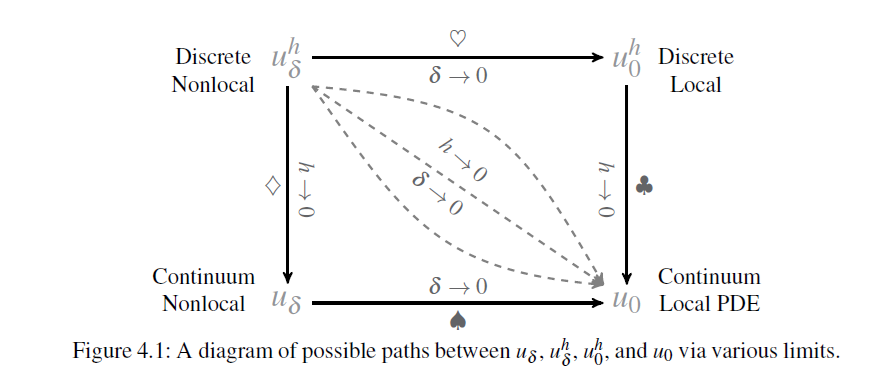
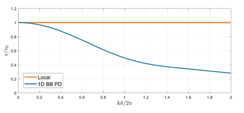
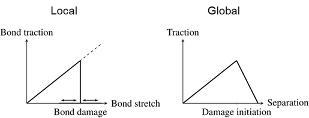
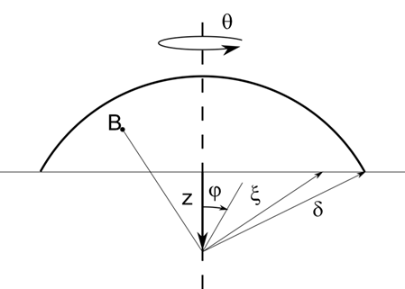

Seminar 3: Convergence and fracture
Convergence
For FEM an error estimation is given bei [25]
\[e=Ch^p\]
| Parameter | Definition |
|---|---|
| $e$ | Error |
| $h$ | Mesh size ($h < 1$) |
| $C$ | Constant |
| $p$ | Polynomial order |
\[h\rightarrow 0\]
leads to $e\rightarrow 0$; if analytical solutions exist
If the fundamental assumptions of classical continuum mechanics are violated, e.g. second derivative of $u$ exists.
Peridynamics

Figure taken from [1]

Figure taken from [32]
Damage models
\[\rho \ddot{u}_i = \frac{1}{2}\sum_j \mu_{ij}(f_{ji}V_i-f_{ij}V_j)+b_i\]
\[\mu_{ij}=\begin{cases} 1 & \text{if undamaged} \\ 0 & \text{if damaged} \end{cases}\]

Critical stretch
The critical stretch model is widely used in literature [1], [33]. It defines the critical length change, or stretch $s$ as a criterion for a damage.
Herleitung Bednarek
\[s_{crit}\leq s \frac{| \underline{\mathbf{Y}} |}{| \underline{\mathbf{X}} |}\]
\[s_{crit} = \sqrt{\frac{G_{0C}}{[3G+(\frac{3}{4})^4(K-\frac{5G}{3})]\delta}}\]
Critical energy
The critical energy model introduced by [34] is valid for state-based peridynamic and bond-based analysis. The bond energy is defined as:
\[w_{bond} = \int_{\boldsymbol{\eta}_{final}} (\mathbf{\underline{T}}[x,t]\langle x'-x\rangle - \mathbf{\underline{T}}[x',t]\langle x-x'\rangle)d\boldsymbol{\eta}\]
with the relative displacement vector as:
\[\boldsymbol{\eta}=\mathbf{\underline{u}}[x',t]-\mathbf{\underline{u}}[x,t]\]
If the bond energy is bigger than or equal to the critical energy value, then the bond is considered to be broken:
\[w_{crit} \leq w_{bond}\]
The critical bond energy can be defined as:
\[w_{crit} = \frac{4G_{0C}}{\pi\delta^4}\]

\[w_{crit}=2\int_0^{\delta}\int_{\mathcal{H}}w_cdV=\int_0^{\delta}\int_{0}^{2\pi}\int_z^{\delta}\int_0^{\cos^{-1}z/\xi}w_c\xi^2\sin\phi d\phi d\xi d\omega dz\]
Equations are taken from [4].
Differences
- discussion in the seminar
- direction
- experimental
Numerical integration
Integration of damage model
## Code concept
#Run material
#Evaluate Damage
#Run Material
omega = ones(length(nodes), nneighbor)
for idt in time
K = create_K(omega)
u = inv(K)*F_V # or from time integration
for iID in nodes
for jID in nlist[iID]
s = (u[iID]+x[iID]-(u[jID]+x[jID]))/(x[jID]-x[iID])
if s>s_crit
omega[i,j]=0
end
end
end
K = create_K(omega)
u = inv(K)*F_V # or from time integration
...
endusing LinearAlgebra
function K_stiff(np, c, omega, V)
K=zeros(np,np)
for iID in 1:np
for jID in -nn:nn
if jID != 0 && iID + jID > 0 && iID + jID < np + 1
xi = L*abs(jID)
K[iID, iID + jID] -= 0.5 * c[iID] / xi * V * omega[iID, iID + jID]
K[iID, iID] += 0.5 *c[iID] / xi * V * omega[iID, iID + jID]
end
end
end
K[np, :] .= 0
K[:, np] .= 0
K[np, np] = 1
return K
end
E = 1
V = 1
L = 1
np = 8
nn = 2
delta = 1
u = zeros(np)
u[1]=0.125
omega=ones(np, np)
##
c=zeros(np)
c .= 2*E/delta^2
c[4]=1.5 .*c[4]
K_undam = K_stiff(np, c, omega, V)
omega[1,2] = 0
K_d = K_stiff(np, c, omega, V)
omega[2,1] = 0
K_dsym = K_stiff(np, c, omega, V)
omega[1,3] = 0
omega[3,1] = 0
K_full_dam = K_stiff(np, c, omega, V)
## Damage
M = ["no damage" "damage" "damage sym" "damage full";K_undam*u K_d*u K_dsym*u K_full_dam*u]
display(M)
#--------------------------
println("Rank")
M = ["no damage" "damage" "damage sym" "damage full";
rank(K_undam) rank(K_d) rank(K_dsym) rank(K_full_dam)]
display(M)
Discussion
- How many bonds are allowed to break per time step?
- Size of the horizon?